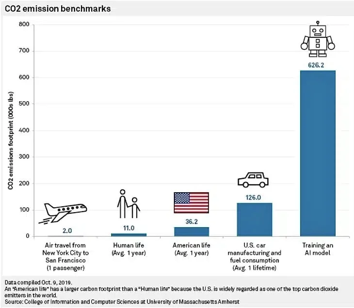
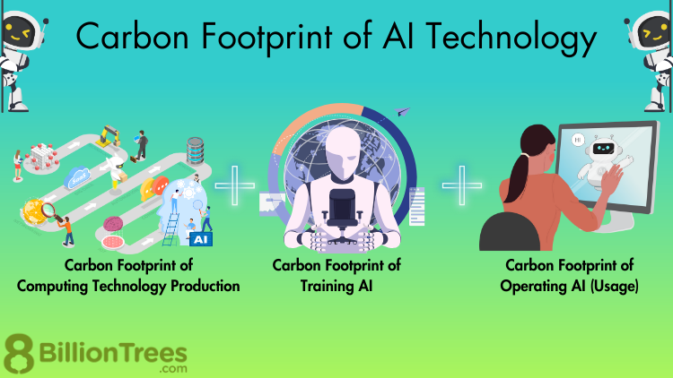

Topics
1️⃣ Dr. Sasha Luccioni on AI and Climate Change: Equating Positive Impacts with Negative Effects
2️⃣ Power Hungry Processing: Watts Driving the Cost of AI Deployment? by Alexandra Sasha Luccioni, Yacine Jernite, Emma Strubell
Edinburgh Sensors (n.d.) How gas sensors work: A quick guide. Edinburgh Sensors [online]. Available at: https://edinburghsensors.com/blog/3928/ (Accessed: 4 May 2025)
What I learned
This week, I studied the relationship between AI and climate change, as well as the deployment costs of AI models. Dr. Sasha Luccioni’s lecture made me realize the dual nature of AI — it is both a powerful tool for solving environmental problems and an environmental burden itself. For example, AI can promote sustainable development by improving battery technology, optimizing energy management, and monitoring biodiversity. However, at the same time, the energy consumption and carbon emissions during the training and use of AI models are also shocking.
At same time, the paper “Power Hungry Processing” provides a more systematic analysis of the energy consumption and carbon emissions of AI models during actual deployment. The authors compare task-specific models (such as fine-tuned models) with multi-purpose generative models in terms of their energy use during inference. They found that even when the models have a similar number of parameters, the energy consumption of general-purpose generative models performing the same task is often orders of magnitude higher. This made me realize that although the currently popular “all-in-one” AI systems are flexible and powerful, their environmental cost needs to be taken seriously.

The Sustainable Agency (n.d.) The environmental impact of generative AI. The Sustainable Agency [online]. Available at: https://thesustainableagency.com/blog/environmental-impact-of-generative-ai/ (Accessed: 4 May 2025)
Critical reflection
These two pieces of information have deepened my understanding of “technological sustainability.” Previously, I focused more on the applications of AI in innovation and interaction design. However, now I realize that while we are pursuing functional diversity, we must reflect on the costs behind this “versatility.” The energy consumption indicator of “1,000 inferences” mentioned in the paper provides me with a very intuitive measure. It also makes me reflect on whether, in practical applications, we really need to use large-scale general-purpose models every time, or whether we can replace them with lighter and task-specific models instead.

8 Billion Trees (n.d.) The carbon footprint of AI: How artificial intelligence impacts the environment. 8 Billion Trees [online]. Available at: https://8billiontrees.com/carbon-offsets-credits/carbon-footprint-of-ai/ (Accessed: 4 May 2025)
Connection to my work
At the moment, although my project hasn’t directly used AI models, if it involves AI in the future (for example, integrating generative interaction or content generation into my VR/AR experience), I must consider how to select models that not only meet the functional requirements but are also environmentally friendly. This reminds me that during the project planning stage, “energy efficiency” and “environmental impact” should be taken into account as key parameters, rather than only thinking about how to “reduce emissions” after the fact.
Next steps
I plan to further explore what methods are currently available for effectively measuring the energy consumption of AI applications. For instance, I want to know if there are APIs or tools that can track the carbon footprint of models in real time. In addition, I also hope to try using the interactive tools mentioned in the paper to explore more data, and implement the strategy of “selecting the minimum viable model on demand” in future projects to reduce unnecessary waste of resources.